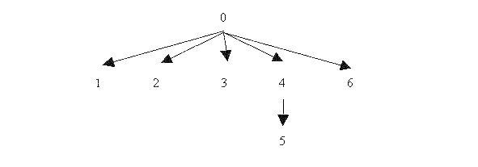

Considere
la siguiente definición en ocaml
para el tipo de dato ‘a
arbolgen
(que sirve para representar árboles con nodos etiquetados con
valores de tipo ‘a,
en los que de cada nodo puede colgar cualquier número de
ramas)
type
'a arbolgen = Nodo of 'a * 'a arbolgen list;;
de
modo que, por ejemplo, el valor ag1
definido por
let
ag1 = Nodo (0, [Nodo (1, []); Nodo (2, []); Nodo
(3, []);
Nodo (4, [Nodo (5, [])]); Nodo
(6, [])])
correspondería
al árbol

Defina la
función numnodos
: ‘a arbolgen -> int que
devuelva el número de nodos de un árbol, de forma que,
por ejemplo,
numnodos ag1 = 7
Defina
una función nodos
: ‘a arbolgen -> 'a list que
devuelva, para cada árbol, una lista con sus nodos, de forma que,
por ejemplo, nodos
ag1 = [0; 1; 2; 3; 4; 5; 6] (no necesariamente en ese orden).
Defina la
función nodomax
: ‘a arbolgen -> 'a que
devuelva el valor máximo de los nodos de un árbol, de forma que,
por ejemplo, nodomax
ag1 = 6
Defina la función raiz
: ‘a arbolgen -> 'a que
devuelva la raíz de un árbol, de forma que,
por ejemplo, raiz ag1
= 0
Defina la
función primera_rama
: ‘a arbolgen -> 'a arbolgen que
devuelva la primera rama de un árbol, de forma que,
por ejemplo, raiz ag1
= Nodo (1, [ ])
Defina la
función hojas
: ‘a arbolgen -> 'a list que
devuelva la lista con las hojas de un árbol (de izquierda a derecha),
de forma que,
por ejemplo, hojas
ag1 = [1; 2; 3; 5; 6]
Defina la función altura :
‘a arbolgen -> int que
devuelva la altura de un árbol (considerando que los árboles que sólo
tienen raíz son de altura 0), de forma que,
por ejemplo, altura
ag1 = 2
Defina la
función monticulo
: ‘a arbolgen -> bool que indique
si un árbol es o no "montículo" (entendiendo que un árbol es
"montículo" si el valor de cada nodo es mayor o igual que el de todos
los nodos que cuelgan de él), de forma que,
por ejemplo, monticulo
ag1 = false
Defina la función mont_gen
: ('a -> 'a -> bool) -> ‘a arbolgen -> bool
que indique si un árbol es o no "montículo" con una relación de orden
dada, de forma que,
por ejemplo, mont_gen
(>=) ag1 = false, pero mont_gen
(<=) ag1 = true
Defina la
función espejo
: ‘a arbolgen -> 'a arbolgen que
devuelva, para cada árbol, su imagen especular.
Defina la
función anchura
: ‘a arbolgen -> 'a list que
devuelva , para cada árbol, una lista con el recorrido de sus nodos "en
anchura", de forma que,
por ejemplo, anchura
ag1 = [0; 1; 2; 3; 4; 6; 5]
Defina una
función maxpath
: ‘a arbolgen -> 'a list que
devuelva , para cada árbol, una lista con un camino de longitud maximal
desde la raíz del árbol hasta una de sus hojas, de forma que,
por ejemplo, maxpath
ag1 = [0; 4; 5]